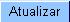

Atualizar Cronograma de Faturamento
Esta tela
faz parte do processo "Manter Cronograma de Faturamento", e
permite que
você
atualize as informações do Cronograma de
Faturamento.
Os campos "Grupo de Faturamento" "Mês/Ano de
Referência"
não
podem ser alterados, porque representam a chave de
identificação do Cronograma de Faturamento.
O sistema
apresenta a tabela com a relação de atividades do
Cronograma de Faturamento selecionado.
Efetue as alterações que desejar, e clique no
botão  para solicitar ao sistema a
atualização das informações
na base de dados.
Prenchimento dos campos
-
Tabela das Atividades do Processo de
Faturamento: Tabela
com a relação de todas atividades
possíveis no processo de faturamento. Você
deverá selecionar a atividade e informar a data prevista de
execução. Veja, abaixo, as colunas
existentes na tabela:
- Comandar: Possui um
"check-box" para que você selecione as atividades que
serão executadas. Você deverá
desmarcar as que
não deseja executar para o grupo e mês/ano de
faturamento.
- O
"check-box" não será apresentado quando a
atividade.....

- Atividade:
Descrição da atividade que será
executada. Trata-se de uma coluna informativa.
- Predecessora:
Informa a atividade que, obrigatoriamente, deverá ser
executada antes. Nem todas as atividades tem atividade predecessora.
Mas, para as que têm, você deverá
observar para não informar uma data de previsão
de execução incompatível.
- Obrigatória:
Indica se a atividade tem execução
obrigatória, ou não. Ou seja, esta atividade
é de execução obrigatória
no processo de faturamento, portanto, torna-se obrigatório
informar a data de previsão
de execução.
- Data Prevista:
Você deve informar a data prevista para
execução da atividade. Observar a
consistência com as datas predecessoras e com o
mês/ano de referência. Caso exista alguma
inconsistência, o sistema emitirá uma mensagem de
erro. Para as atividades que já foram realizadas
não será possível alterar a Data
Prevista.
- Você
tem
duas opções para informar a data:
- Digitando-a
no
campo. Neste caso você não precisa se
preocupar com as barras
de separação, pois o sistema as
coloca
automaticamente. A data deve ser informada no formato: DD/MM/AAAA, onde
DD é o dia, MM, o mês e AAAA, o ano. O dia e o
mês devem ser informados, obrigatoriamente,
com dois dígitos e o ano com quatro.
- Pesquisando-a
num calendário. Neste caso, clique no
botão
"Calendário"
, existente ao lado do
campo, que será apresentada uma tela onde você
poderá selecionar uma data no
calendário.
- Data Realização: Este campo é
informativo e apresenta a data de execução das atividades
que já foram realizadas. Quando uma atividade já tiver
sido realizada, não poderá ser alterada, portanto o campo
Data Prevista ficará protegido contra
atualização.
Observação - 1: Os campos
obrigatórios estão marcados um um asterisco
vermelho (*)
Observação
- 2: Para configurar a
relação de atividades a serem executadas no
processo de faturamento (escopo, descrição,
seqüência, predecessora, obrigatoriedade, ....) ,
você deverá ir para a opção:
"Configurar Atividades de Faturamento".
Funcionalidade
dos botões
|
Botão
|
Descrição
|

|
Utilize
este
botão para voltar para a tela anterior. |
 |
Utilize
este botão para fazer com que a tela volte ao seu estado
inicial de exibição. |
 |
Utilize
este
botão para fazer com que o sistema encerre, sem salvar o
que
está sendo feito, e volte para a tela principal. |
|
Utilize
este botão
para solicitar ao sistema a atualização do cronograma de faturamento
na
base de
dados. Neste caso, é necessário que todos os
campos
estejam preenchidos corretamente. Caso exista alguma
inconsistência, o sistema emitirá a mensagem de
crítica correspondente. |
Tela
de Sucesso:
A tela de sucesso
será apresentada
após você clicar no botão "Atualizar", e
não houver nenhuma
inconsistência no conteúdo dos campos da tela.
O sistema apresentará a mensagem abaixo,
quando a atualização tiver sido
realizada com
sucesso.
“Cronograma de Faturamento do grupo
<<código do grupo>>, referente ao
mês/ano <<mês/ano
de referência>>, atualizado com
sucesso.”
O sistema
apresentará duas
opções após a
atualização do Cronograma de Faturamento. Escolha a
opção desejada clicando em
algum dos “links” existentes na
tela de sucesso:
- Menu
Principal --> Para voltar à tela prinicipal.
- Realizar
outra Manutenção de Cronograma de Faturamento --> Para
efetuar a
atualização de outro Cronograma de Faturamento.
Tópicos
Relacionados: